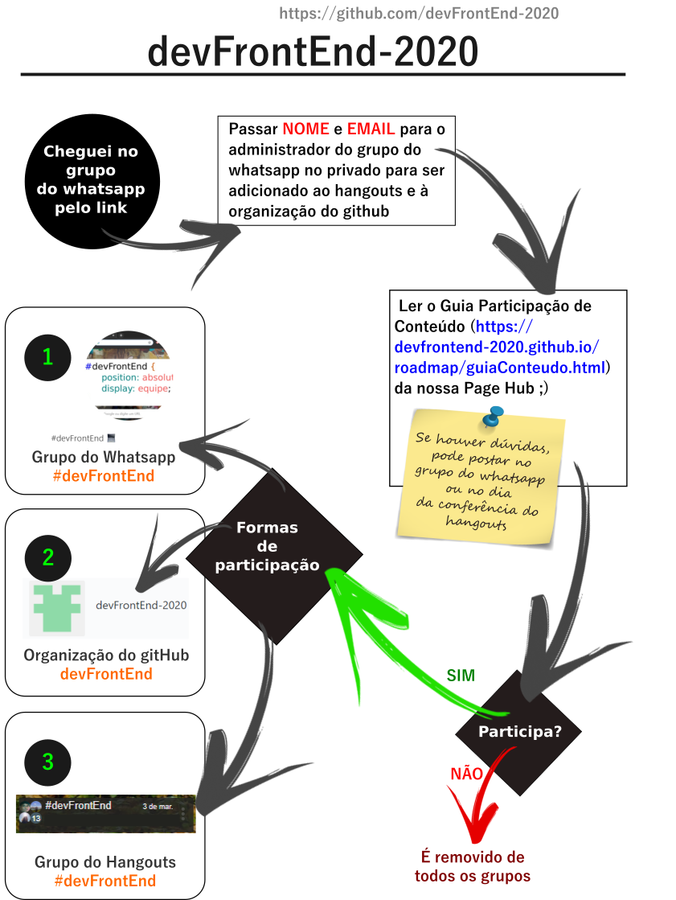

Somos usuários de códi-drogas cibernéticas, usamos tags, cheiramos responsividade e temos várias bocas de bibliotecas e frameworks por aí.
Os efeitos colaterais são debugadores, irá passar noites em claro e sempre verá várias páginas web em uma só.
Tem certeza que quer entrar nessa? dê um tapa no passo 2 então ;P
Hmmm vc está curioso e tá dizendo que só vai ser dessa vez...
Tudo bem, algo novo sempre assusta mesmo, e talvez já seja usuário dessa parada e quer ver de longe para certificar que vai estar no controle
Agora deixando a brincadeira de lado..., somos um grupo que quer estudar de forma diferente trocando ideias com pessoas que querem estudar a mesma coisa. E nessa interação cada um passa seu conhecimento ou ponto de vista diferente sobre o tema em estudo e é nessa troca que há o diferencial. Mas também não é porque preferiu só olhar o conteúdo da nossa organização que estará perdendo algo, nossa organização vai conter explicações em diversos formatos (vídeos, ilustrações, infográficos, memes, etc) em nosso idioma e livre para consultar quando quiser!
Nessa ilustração abaixo, ele simplifica toda a historinha lúdica acima num formato menos nocivo rs:
 Guia Participação de Conteúdo